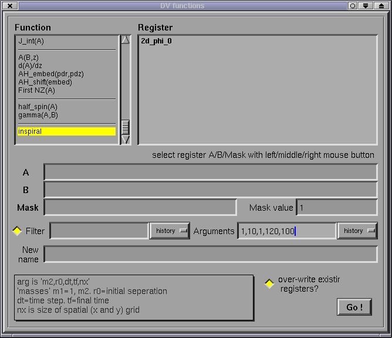
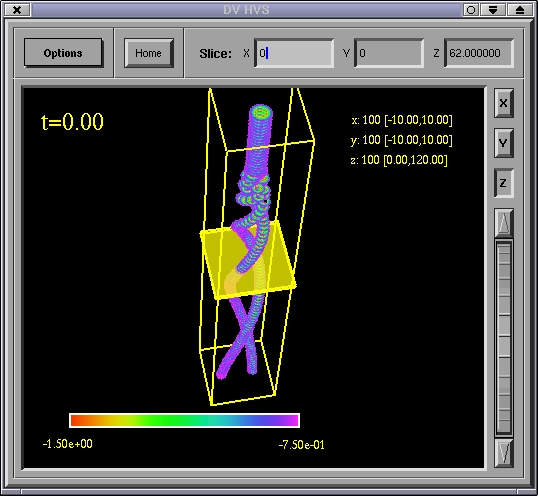
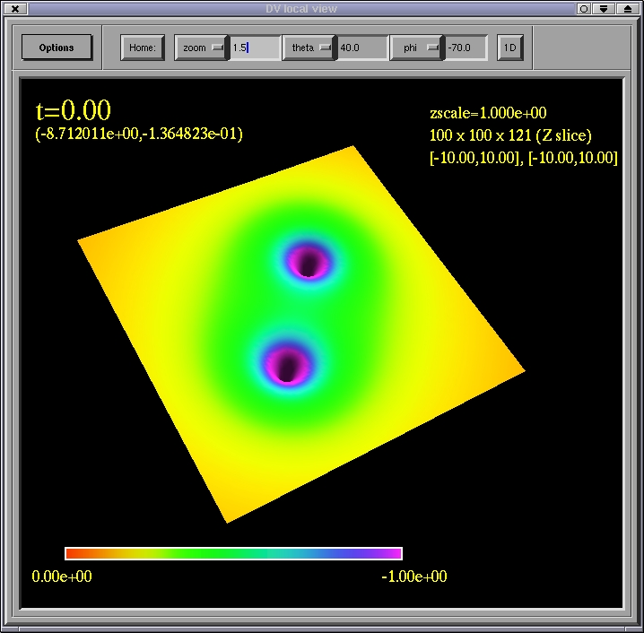

Visualizing 3D data
The DV was offers some facilities to visualize 3D data sets. Specifically,
the 3D slicer window allows one to choose a particular coordinate
slice of a register to display when the Send to local view is used.
As an example, there is a function, inspiral, in DV that produces
a 3D register containing an x-y-t slice of a black hole merger (calculated
using Newtonian gravity plus the quadrupole formula, and the output is
the Newtonian potential). After selecting inspiral from the function
window, enter the following arguments (1,10,1,120,100), and press Go!
(NOTE: if you have a slower machine, it is advised that you reduce
the resolution by changing the arguments to something like (1,10,3,120,32)
):

Two registers, inspiral_2D and inspiral_3D should be produced.
Now click on 3D Slicer in the main window, select the inspiral_3D
register, and click on Send to local view. In the 3D slicer window,
a point-map of the 3D data set is drawn, and various widgets allow one
to select different slices of this data. Changing a slice option causes
the corresponding 2D slice to be drawn in the 2D local view window. For
example, after some manipulation of the view (and changing some of the
send options), the 3D slicer window will look
something like this:

and the corresponding z=62 slice (in this case) will look like this
in the 2D window:

Home
Previous